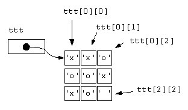
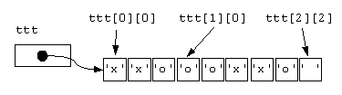

Let's see how the memory is allocated for this array.
char ttt[3][3] = {{'x', 'x', 'o'},
{'o', 'o', 'x'},
{'x', 'o', ' '}
};
The memory for this array could be visualized as in the diagram to the right, which identifies a few cells by their subscripts. |

|
|

|
Because memory is addressed linearly, a better representation is like the diagram to the left. |
char a[ROWS][COLS]; // assume ROWS and COLS are const intsBecause arrays are laid out in memory by row, each row length is COLS (the number of columns is the size of a row). Let's assume that you want to find the address of
a[r][c].
The baseAddress of the array is the address of the first element.
The rowSize is COLS in the above example.
The elementSize is the number of bytes required to represent the
data (typically 1 for char, 4 for int,
4 for float, and 8 for double.
address = baseAddress + elementSize * (r*rowSize + c);Note
ROWS) is not used in the computation.